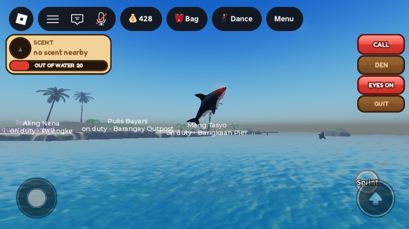
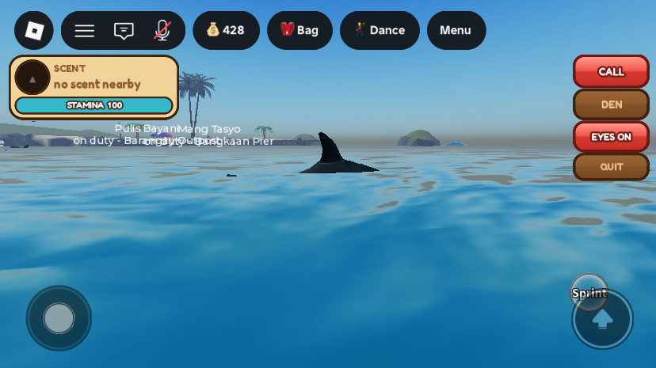
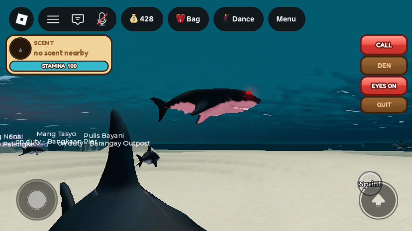
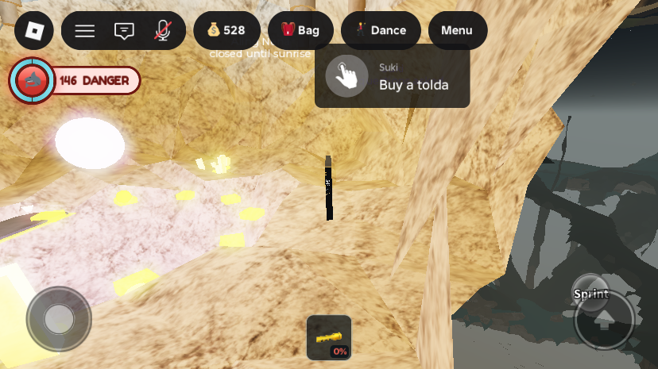
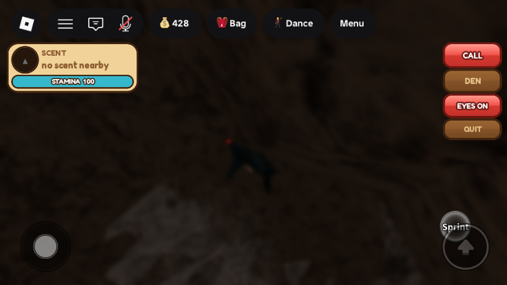

Pating round 2: stamina, the jump-button leap, dash, backup, den, a shark that can't read the cave, and the jump-button fix
What was asked
The owner tried the first Pating build and sent 14 points:
- A shark must not see drops, shells or air chambers (no mapping the cave).
- While swimming, the shark faces the bottom.
- The jump should be a curve like an ambient shark's, used on players on a boat or a small island. A shark that lands on shore or a boat drowns: it has 5 s to get back to the sea or it respawns at the den. A jump costs some air, but not enough to suffocate.
- The eyes are too big; make them proportional to a real shark's.
- No screen shake or heartbeat sting for a shark from the other sharks.
- A shark cannot collect shells, and needs no oxygen UI.
- A shark can call nearby sharks for backup.
- A dash that recharges like stamina; dash + jump makes a longer curve.
- No LUNGE button: the normal jump button (Space, the mobile jump button) leaps.
- Camera stays underwater while idle. Dropped by the owner ("skip this part").
- Blurry eyes in the cave, and none of the air-vent signs or lights: a plain cave, no advantage.
- A shortcut back to the den.
- A hit should send the player flying, like the other sharks do.
- "Normal player loss the jump function": the Roblox touch jump button disappears.
Answers settled with the owner: dash stamina and air are one bar. Dashing drains it and resting in the water refills it. In the water it can hit 0 (the dash stops until it recovers) but never kills. On a boat or land the same bar only drains, and at 0 the shark is taken back to the den. The backup call reaches both other Pating players and the ambient AI sharks. Two notes came in while building: move the scent and stamina off the centre of the screen and make the right-hand buttons smaller, and dash with Shift and the native Run (Sprint) button only, with no DASH button of our own.
What changed
14. The Roblox jump button no longer disappears (every player)
Cause: SprintScript called Humanoid:SetStateEnabled(Jumping, false) in the water for 1 s after a water jump. A disabled Jumping state makes Roblox hide the touch jump button. With no button there is no JumpRequest, and the only code that turned it back on ran on a JumpRequest or on dry land. So a phone player in the sea lost the button until they reached shore. Reproduced in a playtest: after the second water jump the button was hidden on every sampled frame, with Jumping disabled.
SprintScriptnever disables the Jumping state any more.JumpRequestonly records the water-jump time.WaterMovementService: a blocked waterline hop now setsJumpHeight 0.05(JumpPower 0.5) instead of 0, because 0 also hides the button (BLOCKED_JUMP_HEIGHT,BLOCKED_JUMP_POWER). The hop is still useless, as intended.- After the fix: 8 water jumps, 80 samples, the button was visible on all of them.
SprintScript was open in a script editor tab. Setting .Source from execute_luau did not update the open tab, and on Play the tab's old text won, so the first playtest ran the old script. Edits to a script that may be open must go through ScriptEditorService:UpdateSourceAsync, which updates the tab too. Every script in this update was written that way or checked afterwards.3, 8, 9. One stamina bar, the jump-button leap, and dash


- Stamina (
SharkStamina, 0–100, server-owned, replicated). Dash drains 22/s; it refills 14/s in the water 0.8 s after the last dash. Run dry and the dash locks ("WINDED") until the bar is back to 25. Out of the water, after the leap's own flight (2.2 s grace), it drains 15/s. From the 75 left after a leap that is 5 s. At 0 the sea drags the shark back to a den spawn with the bar full. No oxygen row for a shark:StatusHudis hidden while it is one, andBreathServicealready skipped air drain. - Leap = the jump button.
UserInputService.JumpRequest(Space, the Roblox touch jump button) sendsRequestSharkLunge, but only when the shark is in the water with open air within 12 studs overhead. Deeper down the button stays the normal swim-up control and asks nothing. The server re-checks water, the surface (a voxel column read: rock overhead means no), stamina of at least 25 and 1.5 s since the last leap, then takes 25 stamina and tells the client to leap. The LUNGE button and the F key and click-to-lunge are gone. - The curve. The client still launches its own character (95 up, 32 forward) and now holds the forward speed for the whole flight. Before, the Humanoid's air control dragged it to the land walk speed of 5 and the leap went straight up and down. Measured: normal leap 18.6 studs high and 26.5 forward (an ambient shark's leap is about 26); a leap out of a dash goes forward ×1.7 and up ×1.08, measured at 25 high and 52 forward.
- Dash: hold Shift, or the native Sprint touch button. Both are
SprintScript's own input. While a shark,SprintScriptforwards it withRequestSharkDash(true/false), and the server setsSwimSpeedOverride24 → 42 while the stamina lasts (SharkDashing,SharkDashLocked). - No hopping about ashore:
WaterMovementServicegives a shark that is not swimming the blocked jump (0.05). It can still flop at 5 studs/s (SprintScript). - The hit window is now 1.6 s (was 1.4); reach 9 studs; air cost 18; per-shark immunity 10 s. All unchanged otherwise.
2. The shark points where it swims

- Cause: a swimming Humanoid pitches its root face-down when it moves (measured: root LookVector (−0.06, −1.00, −0.03) while swimming along +X), and the mesh was welded to the root.
- Fix: the mesh joint (
PatingSharkWeld) is now a Motor6D. On every client,SharkClientsets itsTransformafter the Animator runs (RunService.Stepped) to the direction of travel: yaw from horizontal velocity (or the root's facing when still), pitch from vertical velocity, clamped to ±50° swimming and ±75° in a leap, smoothed. Measured after the fix: moving +X, mesh LookVector (1.00, 0.01, −0.01) while the root still faced down. - Why not a Weld: the first version rewrote a Weld's
C0every frame. That rebuilds the character's assembly and knocked the Humanoid out of Swimming about 30 times a second (Swimming → GettingUp → Running → Freefall). With the Motor6D it made 0 state changes.
1, 6, 11. A shark does not get to read the cave


- Hidden on the shark's own screen only (client-side property changes, never replicated). Everything comes back when the role ends:
- everything in
Workspace.DroppedGear(drops),Activities.SeaHarvest(shells and finds),Workspace.CaveHoards(dead-end loot) andWorkspace.DeepRunMarkers(deep-run plates); - in
Activities.CaveSystem: every light, SurfaceGui, BillboardGui, prompt, particle, beam and highlight; every Neon part, part with a light, or part named Scallop, Plaque_*, PhotoPad_*, Pearl, Pedestal, Stalk or *_Light_*; and every part of CaveSign_* (slates), LungCoral_* (air corals), PerlasHollowTreasure and Kristal* models. Plain rock dressing stays visible, so the shark still sees walls.
LocalTransparencyModifier = 1; the restEnabled = false. New drops are caught byDescendantAdded, and a 1 s sweep re-hides finds the server re-lights when they respawn. - everything in
- Server enforcement:
SeaHarvestService.onHarvestand the drop pickup inInventoryService.makePickuprefuse aSharkRoleplayer, so a modified client still cannot collect. - Blur: a client
BlurEffectLighting.PatingCaveBlur, size 14, fades in over 0.6 s when the shark is in the cave. "In the cave" means below the sea's surface (y < −4) with terrain rock within 90 studs overhead, and more than 45 studs from the den (the den is roofed rock too). No bounding box: SharkService'sCAVE_BOUNDSmisses the deep vaults (down to y −248, x ±401), and the blur was confirmed on in one of those. - I read the owner's "air vent" as the air-pocket chambers and the Lung Corals. Air pockets are terrain and cannot be hidden, but a shark that surfaces into one is out of water and its bar drains, so it cannot rest there.
4, 5. Eyes and the scare sting
- Eyes: 0.55 → 0.24 studs on the 9-stud shark (about 1/40 of its length), light range 18 → 14. Same place on the head. See the underwater shot above.
SharkService.triggerScarereturns early for aSharkRoleplayer. That remote drives the camera shake and the sting sound inSharkAlertController, including the leap scare.
7, 12. Backup call and the way home
- CALL (or C):
RequestSharkCall, 30 s cooldown (SharkCallReadyAt; the button greys and counts down).- Other Pating players within 250 studs get
SharkStatus "call": a red BACKUP chip under their scent card with an arrow and a distance to the caller, for 8 s. - The ambient sharks answer through a new
ServerStorage.SharkSummonBindableFunction inSharkService: up to 6 of the nearest within 400 studs, not fleeing and not mid-lunge, get a roam target by the caller for 15 s and swim there at their dash speed (s.summonUntil). Nothing else about them changes: they still bite only non-shark players and never enter the cave (a call from inside the cave brings none). - The caller's toast says how many answered.
- Other Pating players within 250 studs get
- DEN (or H):
RequestSharkDen, 3 s "swimming home" (SharkDenAt, the button counts down), then a den spawn. Pressing it again or leaping cancels.
13. A hit sends the victim flying
SharkPlayerService.flingcopiesSharkService.bite: off any seat (the seat'sSeatWeldis removed),RagdollwithGettingUpdisabled and the Motor6Ds except the neck let go, a random spin of up to 20, and back up after 2.5 s. The throw is away from the shark.- A victim in the water gets the ambient shark's numbers, 150 sideways + 400 up; water drag eats most of it. A victim on a deck or dock has no drag, and 400 would throw them hundreds of studs onto the island, so they get 40 + 75 (
FLING_SIDE_DRY,FLING_UP_DRY), which should land them in the sea. These are guesses until tested on a real second player. - A victim whose air hit 0 goes through the normal drown path instead (dock revive, loot scatter) and is not flung.
HUD layout (the owner's notes)
- The scent and stamina are one 186×68 card at the top left, under the Roblox top bar, in the status column's place;
StatusHudis hidden for a shark. Nothing sits in the middle of the screen except the short toasts. - CALL / DEN / EYES / QUIT are a small stack (80 wide on touch, 100 with keyboard hints; 26–32 tall) at the top right, above the native jump and Sprint buttons.
- No DASH button: Shift and the native Sprint button do it.
All changes
| DataModel path | What | |
|---|---|---|
| rewritten | ServerScriptService.SharkPlayerService | Stamina tick (10 Hz), dash, leap gating (nearSurface voxel column), fling, backup call, den trip, Motor6D mesh joint, smaller eyes, new Studio hook. Tuning at the top: DASH_SPEED 42, STAMINA_MAX 100, DASH_DRAIN 22, REGEN 14, REGEN_DELAY 0.8, DASH_UNLOCK 25, LAND_DRAIN 15, LEAP_GRACE 2.2, JUMP_COST 25, JUMP_SPACING 1.5, SURFACE_REACH 12, LUNGE_WINDOW 1.6, FLING_SIDE/UP 150/400, FLING_SIDE_DRY/UP_DRY 40/75, FLING_SPIN 20, RAGDOLL_SECONDS 2.5, CALL_COOLDOWN 30, CALL_RANGE 250, CALL_PING_SECONDS 8, SUMMON_RANGE 400, SUMMON_COUNT 6, SUMMON_SECONDS 15, DEN_DELAY 3. LAND_GRACE (8 s) is gone. |
| rewritten | StarterPlayer.StarterPlayerScripts.SharkClient | New HUD layout; jump-button leap with held forward speed (LEAP_MAX_FLIGHT 2.5, dash ×1.7 / ×1.08); CALL/DEN keys C/H; hiding and restoring; cave blur; mesh aim on every client; hides StatusHud, hotbar and the DO NOT SWIM banner while a shark. LUNGE button, F key, click-to-lunge and the DASH button removed. |
| edited | StarterPlayer.StarterPlayerScripts.SprintScript | Never disables the Jumping state (the jump-button fix); forwards Shift / Sprint button to RequestSharkDash while a shark. |
| edited | ServerScriptService.WaterMovementService | Blocked jump is 0.05, not 0 (BLOCKED_JUMP_HEIGHT, BLOCKED_JUMP_POWER); a shark out of the water always gets the blocked jump. |
| edited | ServerScriptService.SharkService | triggerScare skips shark players; new SharkSummon BindableFunction; summoned sharks swim at dash speed (s.summonUntil). |
| edited | ServerScriptService.SeaHarvestService | onHarvest refuses a SharkRole player. |
| edited | ServerScriptService.InventoryService | The drop pickup prompt refuses a SharkRole player. |
| edited | StarterPlayer.StarterPlayerScripts.StatusHud | Air row hidden while SharkRole (the whole HUD is also disabled by SharkClient for a shark). |
| remote | ReplicatedStorage.Remotes.RequestSharkDash, RequestSharkCall, RequestSharkDen | Created by SharkPlayerService at start (client → server). SharkStatus gains kind "call". |
| instance | ServerStorage.SharkSummon (BindableFunction, runtime) | Created by SharkService: Invoke(pos, range, count, seconds) → number answered. |
| attributes | Player | SharkStamina, SharkDashing, SharkDashLocked, SharkDry, SharkDenAt, SharkCallReadyAt (cleared on leaving the role, with the round 1 ones). |
| studio hook | ServerStorage.DebugPating (Studio only) | Fire(player, "dash", bool | "call" | "den" | "stamina", n). DebugPatingLunge(player, true) now also tops the stamina up to cover the leap. |
No terrain or world edits. No instances removed.
Testing
Solo playtests in iPhone emulation, each ended by kicking the player from the Server datamodel. All eight edited scripts compile, the editor tabs match the saved source, and there were no script errors in the console.
- Jump button: before the fix, hidden on every frame after the 2nd water jump (Jumping state disabled). After: 8 jumps, 80 samples, never hidden, Jumping always enabled.
- Stamina/dash: 100 → 55 after 2 s of dash (speed 42), 0 and locked by 5 s (speed back to 24), dash refused while locked, unlocked at 39 after 2 s rest.
- Leap: 18.6 up / 26.5 forward; dash-leap 25.1 / 52.4; each cost 25 (net of regeneration).
- Beached: put on dry land at 75:
SharkDry, 75 → 6 in 4.6 s, then back at the den with 100. - Swim pose: 0 Humanoid state changes while swimming; mesh follows travel while the root faces down (numbers above).
- Hiding: in the cave: SeaHarvest 32/32 parts hidden and 64/64 lights and prompts off; CaveSystem 226 marker parts hidden and 114/114 lights, signs and prompts off. After the role ended: 0 hidden anywhere, and StatusHud, hotbar and blur restored.
- Blur: on in a water passage (−109, −143, 138) and in the deep vault (−401, −239, 278); off in the den and the open sea.
- Backup call: the six nearest ambient sharks went from 43/71/94/127/146/156 studs to 25/34/54/78/92/100 in 8 s.
- Den: still in place 1.5 s after DEN; at the den after 3.5 s.
- Hits (stand-in dummy): one hit (18 air, throw direction recorded), a second leap within 10 s did nothing. Poison dummy: the shark lost the role and was
Revivingon the dock.
Still unverified / known issues
- No real second player yet. The fling on a real character (ragdoll, 150/400 in water, 40/75 on a deck), the other Pating's BACKUP chip, and the pose as seen from another client (each client aims the mesh itself) all need a 2-account test.
- Shift and the Sprint button driving the dash were not pressed by hand; the dash was driven by the Studio hook. The
SprintScriptwiring compiles and runs, but it needs a real press on a keyboard and a phone. - The Pating Den is roofed rock and deeper than 12 studs: a shark cannot leap from inside it, only after swimming out of a mouth. That is intended, but worth knowing.
- The "Going deep?" first-dive tip (GearHud) still pops up in the middle of the screen for a shark the first time it dives.
- Item 10 (underwater idle camera) was skipped by the owner.
- All the numbers are first pass: stamina rates, leap cost, the dry fling, blur size, call range.
- The playtests set
Lighting.ClockTimefor the shots (playtest only; nothing to revert in the place). The test account spent about 400 more Peso on role fees.